介绍
在这一章中，你将开始深度学习领域内的另一个有趣的话题:生成对抗网络 ( 甘斯)。您将了解GANs及其基本组件，以及它们的一些用例。本章将为您提供创建GAN以生成正弦函数产生的数据分布的实践经验。还将向您介绍深度卷积GANs，并做一个生成MNIST数据分布的练习。本章结束时，你将通过生成MNIST时装数据集来测试你对GANs的理解。
简介
创造力一直是人类思维的专属领域。这是被吹捧为人类思维和人工智能领域之间的主要差异之一的事实之一。然而，在最近的过去，深度学习已经在创造的道路上迈出了小步。想象一下，你在梵蒂冈的西斯廷教堂，困惑地抬头看着米开朗基罗不朽的壁画，希望你的深度学习模型能够重现那样的东西。嗯，也许10年前，人们会嘲笑你的想法。然而，现在不是了——深度学习模型在再生不朽作品方面取得了巨大进步。一类叫做生成对抗网络 ( GANs )的网络使得这样的应用成为可能。
GANs的许多应用已经成为可能。请看下图:
图7.1:使用GANs的图像翻译
注意:
前面的图片来源于题为有条件对抗网络的图像到图像翻译的研究论文:Phillip Isola，，Tinghui Zhou，Alexei A. Efros，可在https://arxiv.org/pdf/1611.07004.pdf获得。
上图展示了GAN如何将色彩方案截然不同的输入图像转换为与真实图像非常相似的图像。GANs的这个应用叫做图像翻译。
除了这些例子之外，许多其他用例也有吸引力。一些值得注意的例子如下:
- 用于数据扩充的合成数据生成
- 生成卡通人物
- 文本到图像的翻译
- 三维物体生成
这样的例子不胜枚举。随着时间的推移，GANs的应用越来越成为主流。
那么，甘到底是什么？GANs的内在动力是什么？如何从完全不相关的分布中生成图像或其他数据分布？在这一章中，我们将找到这些问题的答案。
在前一章，我们学习了递归神经网络 ( RNNs )，一类用于序列数据的深度学习网络。在这一章中，我们将踏上甘斯世界的迷人之旅。首先，我们将从GANs的介绍开始。然后，我们将重点关注生成一个类似于已知数学表达式的数据分布。然后我们将继续讨论深度卷积GANs ( DCGANs )。为了了解我们的生成模型工作得有多好，我们将生成一个类似于MNIST手写数字的数据分布。我们将从了解甘斯开始这一旅程。
注意
根据您的系统配置，本章中的一些练习和活动可能需要很长时间来执行。
生成性对抗网络的关键组成部分
gan用于从随机噪声数据创建数据分布，并使其看起来类似于真实的数据分布。GANs是一个深度神经网络家族，由两个相互竞争的网络组成。其中一个网络被称为发生器网络，而另一个被称为鉴别器网络。这两个网络的功能是相互竞争以产生一个近似模拟现有概率分布的概率分布。为了陈述生成新的概率分布的例子，假设我们有猫和狗的图像(真实图像)的集合。使用GAN，我们可以从非常随机的数字分布中生成一组不同的猫和狗的图像(假图像)。GAN的成功之处在于生成了最好的一组猫狗图像，以至于人们很难区分真假。
GANs有用的另一个例子是在数据隐私方面。公司的数据，尤其是金融和医疗保健等领域的数据，极其敏感。但是，可能会有出于研究目的不得不与第三方共享数据的情况。在这种情况下，为了保持数据的机密性，公司可以使用GANs来生成与其现有数据集性质相似的数据集。有许多这样的商业用例，GANs可以派上用场。
让我们更好地理解gan，绘制出它们的一些组件，如下图所示:
图7.2:氮化镓结构示例
上图简要概述了GAN的组件，以及它们如何方便地从真实图像生成假图像。让我们在上图的上下文中理解该流程:
- 上图左上角的一组图像代表真实数据的概率分布(例如，MNIST、猫和狗的图像、人脸图片等等)。
- 图中左下部分所示的生成网络从随机噪声分布生成假图像(概率分布)。
- 经过训练的判别网络对输入的图像进行真伪分类。
- 通过反向传播算法工作的反馈回路(菱形框)向发电机网络提供反馈，从而改进发电机模型的参数。
- 这些参数不断被改进，直到鉴别器网络不能区分假图像和真图像。
现在我们已经对每个组件有了一个概述，让我们更深入地了解它们，并通过一个问题陈述更好地理解它们。
问题陈述——生成类似于给定数学函数的分布
在这个问题中，我们将使用GANs生成一个类似于数学函数的数据分布的分布。我们将用来生成真实数据的函数是一个简单的正弦波。我们将训练一个GAN来生成一个假的数据分布，它将类似于我们从已知的数学函数中生成的数据。在遍历这个问题陈述的解决方案时，我们将逐步构建所需的每个组件。
下图解释了我们将遵循的流程。我们将按照该图中详述的步骤遵循教学方法:
图7.3:从已知函数构建GAN的四步流程
现在，让我们来探索其中的每一个过程。
流程1–从已知函数生成真实数据
为了开始我们的旅程，我们需要一个真实的数据分布。这种数据分布将包括两个特征——第一个是序列，第二个是序列的正弦。第一个特征是一系列等距分布的数据点。要生成这个序列，我们需要从正态分布中随机生成一个数据点，然后找到其他以相等间隔排列的数字。第二个特征将是第一个特征的sine()。这两个特征将形成我们真正的数据分布。在我们开始生成真实数据集的练习之前，让我们看一下在这个过程中我们将使用的numpy库中的一些函数。
随机数生成
首先，我们将使用以下函数从正态分布中生成一个随机数:
numpy.random.normal(loc,scale,size)
该函数有三个参数:
loc:这是数据分布的平均值。scale:这是数据分布的标准差。size:这定义了我们想要的数据点的数量。
将数据排列成序列
为了按顺序排列数据，我们使用以下函数:
numpy.arange(start,end,spacing)
论点如下:
start:这是序列应该开始的点。end:序列结束的点。spacing:序列中每个连续数字之间的频率。例如，如果我们从1开始，生成一个间距为0.1的序列，该序列将如下所示:
1, 1.1,1.2 ……..
产生正弦波
要生成一个数的正弦值，我们使用以下命令:
numpy.sine()
让我们在下面的练习中使用这些概念，并学习如何生成真实的数据分布。
练习7.01:从已知函数生成数据分布
在本练习中，我们将从一个简单的正弦函数生成一个数据分布。通过完成本练习，您将学习如何从正态分布生成一个随机数，并以该随机数为中心创建一个等距数据序列。这个序列将是第一个特征。第二个特征将通过计算第一个特征的sine()来创建。按照以下步骤完成本练习:
- 打开一个新的Jupyter笔记本，命名为
Exercise 7.01。运行以下命令导入必要的库包:# Importing the necessary library packages import numpy as np
- 从平均值为3、标准偏差为1的正态分布中生成一个随机数:
""" Generating a random number from a normal distribution with mean 3 and sd = 1 """ np.random.seed(123) loc = np.random.normal(3,1,1) loc array([1.9143694])
- 使用之前生成的随机数作为中点，我们将在中点的右边和左边生成相等的数字序列。我们将生成一批128个数字。因此，我们在中点左右各取64个数字，间距为0.1。以下代码在中点右侧生成一个序列:
# Generate numbers to right of the mid point xr = np.arange(loc,loc+(0.1*64),0.1)
- 在中点左侧生成64个数字:
# Generate numbers to left of the random point xl = np.arange(loc-(0.1*64),loc,0.1)
- Concatenate both these sequences to generate the first feature:
# Concatenating both these numbers X1 = np.concatenate((xl,xr)) print(X1)
您应该会得到类似如下所示的输出:
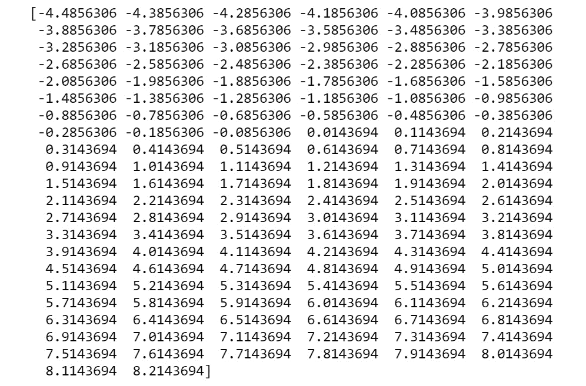图7.4:等间距的数字序列
前面是彼此等距分布的
128数。这个序列将是我们数据分布的第一个特征。 - 生成第二个特征，它是第一个特征
# Generate second feature X2 = np.sin(X1)
的sine() - Plot the distribution:
# Plot the distribution import matplotlib.pyplot as plot plot.plot(X1, X2) plot.xlabel('Data Distribution') plot.ylabel('Sine of data distribution') plot.show()您应该得到以下输出:
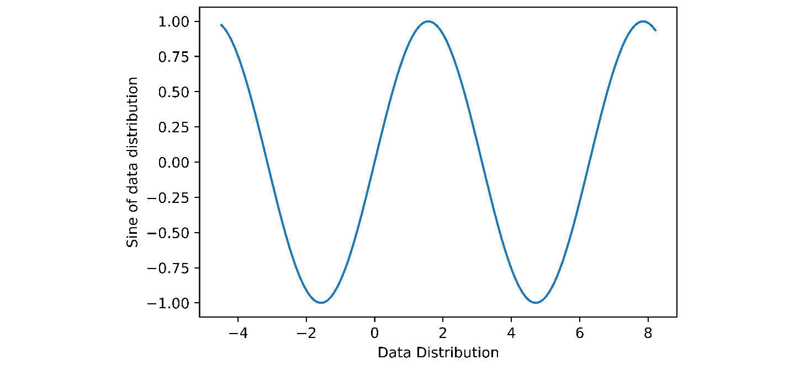图7.5:正弦函数图
上图显示了您试图使用GANs模拟的分布。
- 在连接每个特征之前对其进行整形:
# Reshaping the individual data sets X1 = X1.reshape(128,1) X2 = X2.reshape(128,1)
- Concatenate both features to form a single DataFrame:
# Concatenate both features to form the real data set realData = np.concatenate((X1,X2),axis=1) realData.shape
您应该得到以下输出:
(128, 2)
注意
要访问该特定部分的源代码，请参考https://packt.live/3gHhv42。
你也可以在https://packt.live/2O62M6r在线运行这个例子。您必须执行整个笔记本才能获得想要的结果。
在本练习中，我们通过数学函数创建了一个数据分布。稍后，我们将使用该数据分布来训练GAN，以生成类似于此的分布。在生产环境中，您将获得一个真实的数据集，类似于MNIST或Imagenet数据集。在这种情况下，我们真正的数据集是一个已知的数学函数。在本章的后面，我们将使用一些随机噪声数据，并训练GAN，使随机噪声数据与真实数据分布相似。
现在我们已经看到了真实的数据分布，下一节将是关于创建一个基本的生成网络。
流程2——创建基本的创成式网络
在前面的过程中，我们处理了一个将从已知函数生成分布的示例。正如我们前面提到的，生成网络的目的是从任意分布中采样数据，然后将该数据转换为看起来类似于已知分布的生成样本。
生成网络实现这一点的方式是通过生成器、鉴别器和训练过程的动态。生成网络的成功依赖于它创建鉴别器无法区分的数据分布的能力——换句话说，它无法确定该分布是否是假的。这种生成网络创建可以欺骗鉴别器的分布的能力是通过训练过程获得的。我们将在本章后面更多地讨论鉴别器和训练过程。现在，让我们看看如何构建一个生成器网络，从一些随机分布生成假数据分布。
构建生成网络
生成网络是经过训练的神经网络，用于转换任意分布，使其看起来与已知分布相似。我们可以为此使用任何类型的神经网络，例如多层感知器 ( MLPs )、卷积神经网络(CNN)等等，来构建生成器网络。这些网络的输入数据是我们从任意分布中抽取的样本。在这个例子中，我们将使用MLP来构建一个生成网络。在我们开始构建网络之前，让我们回顾一下你在前面章节中学到的神经网络的一些构建模块。我们将使用Keras库构建网络。
顺序()
您可能已经知道，神经网络由不同层的节点组成，这些节点之间有连接。API是一种机制，通过它你可以在Keras中创建这些层。使用以下代码实例化了Sequential() API:
from tensorflow.keras import Sequential Genmodel= Sequential()
在代码的第一部分中，Sequential()类是从tensorflow.Keras模块导入的。然后在第二行代码中将它实例化为一个变量模型。
内核初始化器
在第2章、神经网络中，您了解到训练过程包括更新神经网络的权重和偏差，以便有效地学习将输入映射到输出的功能。作为训练过程的第一步，我们为权重和偏差初始化一些值。这些在反向传播阶段得到更多的更新。在接下来的练习中，权重和偏差的初始化是通过一个名为he_uniform的参数完成的。内核初始化器将作为一个参数添加到网络中。
密集的地层
神经网络中每一层内的基本动态是该层的权重和该层的输入之间的矩阵乘法(点积),以及偏差的进一步增加。这由dot(X,W) + B等式表示，其中X是层的输入，W是权重或内核，B是偏差。神经网络的这种操作是使用Keras中的密集层来完成的。这在代码中实现，如下所示:
from tensorflow.keras.layers import Dense
Genmodel.add(Dense(hidden_layer,activation,\
kernel_initializer,input_dim))
Genmodel.add(Dense(hidden_layer,activation,kernel_initializer))
注意
上面的代码块仅仅是为了解释代码是如何实现的。当以当前形式运行时，它可能不会产生理想的输出。现在，试着完全理解语法；我们将在练习7.02 、构建生成网络中实践这一代码。
正如您所看到的，我们向之前创建的Sequential()类(Genmodel)的实例化添加了一个密集层。定义密集层需要给出的一些关键参数如下:
(hidden_layer):你可能知道，隐藏层是神经网络中的中间层。隐藏层的节点数被定义为第一个参数。(activation):另一个参数是将要使用的激活功能的类型。激活功能将在下一节详细讨论。(kernel_initializer):用于该层的内核初始化器的种类在密集层中定义。(input_dim):对于网络的第一层，我们必须定义输入的维度(input_dim)。对于后续层，这是根据每层的输出尺寸自动推导出来的。
激活功能
你可能知道，激活函数会给神经元的输出带来非线性。在神经网络中，激活函数就在密集层之后引入。密集层的输出是激活函数的输入。在以下练习中将使用不同的激活功能。它们如下:
- ReLU :代表整流线性单元。这个激活函数只输出正值。所有负值将被输出为零。这是使用最广泛的激活功能之一。
- ELU :代表指数线性单位。这与ReLU非常相似，只是它也输出负值。
- 线性:这是一个直线激活功能。在此功能中，激活与输入成比例。
- SELU :代表比例指数线性单元。这个激活功能是一个相对较少使用的功能。它实现了一种称为内部标准化的思想，这种思想确保了与先前层的均值和方差得以保持。
- 乙状结肠:这是一个非常标准的激活功能。sigmoid函数将任何输入压缩为0到1之间的值。因此，当值在0和1之间时，sigmoid函数的输出也可以被视为概率分布。
现在我们已经看到了网络的一些基本构建模块，让我们在下一个练习中继续构建我们的生成网络。
在我们开始练习之前，让我们看看下一个练习在整体计划中的位置。在练习7.01 、从已知函数生成数据分布中，我们从一个已知的数学函数创建了一个数据分布，这是一个sine()函数。我们通过以相等的间隔排列第一个特征来创建整个分布，然后通过采用第一个特征的sine()函数来创建第二个特征。所以，我们实际上控制了创建这个数据集的整个过程。这就是为什么这被称为真正的数据分布，因为数据是从一个已知的函数中创建的。GAN的最终目标是转换随机噪声分布，使其看起来像真实的数据分布；也就是说，让随机分布看起来像结构化的sine()分布。这将在后面的练习中实现。然而，作为第一步，我们将创建一个生成网络，它将创建一个随机的噪声分布。这是我们在下一个练习中要做的。
练习7.02:构建一个生成性网络
在本练习中，我们将构建一个生成网络。生成网络的目的是从随机噪声数据中生成伪数据分布。我们将通过生成随机数据点作为生成器网络的输入来做到这一点。然后，我们将建立一个六层网络，一层一层。最后，我们将预测网络的输出并绘制输出分布图。这个数据分布将是我们的假分布。按照以下步骤完成本练习:
- 打开一个新的Jupyter笔记本，命名为
Exercise 7.02。导入以下库包:# Importing the library packages import tensorflow as tf import numpy as np from numpy.random import randn from tensorflow.keras.models import Sequential from tensorflow.keras.layers import Dense from matplotlib import pyplot
- In this step, we define the number of input features and output features for the network:
# Define the input features and output features infeats = 10 outfeats = 2
我们将有10个特征作为输入，输出将是两个特征。任意选择
10的输入特性。选择2的输出特征是因为我们的真实数据集包含两个特征。 - Now, we will generate a batch of random numbers. Our batch size will be
128:# Generate a batch of random numbers batch = 128 genInput = randn(infeats * batch)
我们可以选择任何批量。选择
128的批量大小，以便我们注意到我们拥有的计算资源。由于输入大小是10，我们应该生成128 × 10的随机数。另外，在前面的代码中，randn()是生成随机数的函数。在函数内部，我们指定需要多少个数据点，在我们的例子中是(128 × 10)。 - Let's reshape the random data into the input format we want using the following code:
# Reshape the data genInput = genInput.reshape(batch,infeats) print(genInput.shape)
您应该得到以下输出:
(128, 10)
- In this step, we will define the generator. This network will have six layers:
# Defining the Generator model Genmodel = Sequential() Genmodel.add(Dense(32,activation = 'linear',\ kernel_initializer='he_uniform',\ input_dim=infeats)) Genmodel.add(Dense(32,activation = 'relu',\ kernel_initializer='he_uniform')) Genmodel.add(Dense(64,activation = 'elu',\ kernel_initializer='he_uniform')) Genmodel.add(Dense(32,activation = 'elu',\ kernel_initializer='he_uniform')) Genmodel.add(Dense(32,activation = 'selu',\ kernel_initializer='he_uniform')) Genmodel.add(Dense(outfeats,activation = 'selu'))从网络中我们可以看到，在第一层，我们定义了输入的维数，是10，在最后一层，我们定义了输出的维数，是2。这是基于我们在步骤4 (10)中生成的输入数据维度和我们想要的输出特征，这与真实数据分布的特征数量相似。
- We can see the summary of this network by using the
model.summary()function call:# Defining the summary of the network Genmodel.summary()
您应该得到以下输出:
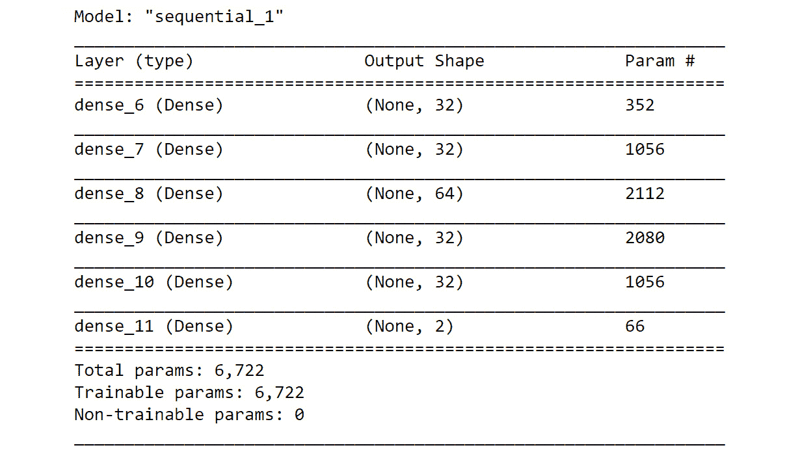图7.6:发电机网络概述
从摘要中，您可以看到每一层的输出形状。例如，由于第一隐藏层具有
32个神经元，所以来自密集层的输出具有(批量，32大小)的形状。None在形状层中表示样本的数量，在这种情况下表示输入批量。第一层的数字352是参数的大小，包括权重和偏差。权重矩阵的大小将为(10 × 32 ),因为第一层的输入数为10，下一层(隐藏层1)有32个神经元。偏置数将为(32 × 1)，相当于第一层的隐层神经元数。所以，总共有320 + 32 = 352个参数。第二层将是(32 × 32) + ( 32 × 1) = 1，056，所有后续层依此类推。 - Now that we have defined the generator network, let's generate the output from the network. We can do that using the
predict()function:# Generating fake samples from network fakeSamps = Genmodel.predict(genInput) fakeSamps.shape
您应该得到以下输出:
(128, 2)
我们可以看到，generator函数的输出生成了一个具有两个特征和几个示例的样本，该样本等于我们给出的批量。
- Plot the distribution:
# Plotting the fake distribution from matplotlib import pyplot pyplot.scatter(fakeSamps[:,0],fakeSamps[:,1]) pyplot.xlabel('Feature 1 of the distribution') pyplot.ylabel('Feature 2 of the distribution') pyplot.show()您应该会得到类似下面的输出。请注意，建模本质上是随机的，因此您可能不会得到相同的输出:
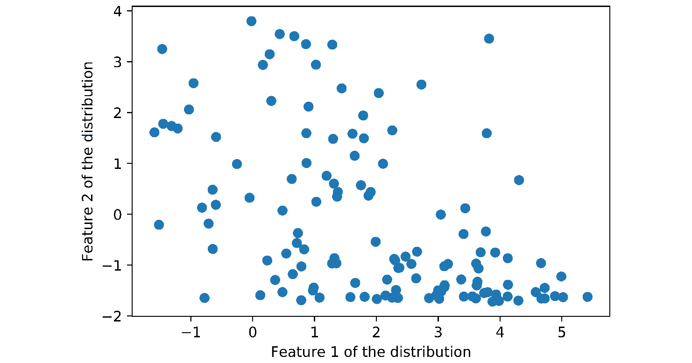
图7.7:假数据分布图
如我们所见，产生了非常随机的数据。正如您将在接下来的练习中看到的，这些随机数据将被转换，以便看起来像真实的数据分布。
注意
要访问该特定部分的源代码，请参考https://packt.live/2W0FxyZ。
你也可以在https://packt.live/2WhZpOn的在线运行这个例子。您必须执行整个笔记本才能获得想要的结果。
在这个练习中，我们定义了生成器网络，它有六层，然后从生成器网络生成第一个假样本。你可能想知道我们是如何达到这六层的。激活函数的选择呢？嗯，这个网络架构是在对这个问题陈述做了大量实验后得出的。在寻找合适的架构方面没有真正的捷径。我们必须在试验了不同的参数(如层数、激活类型等)后，得出最佳的架构。
设置鉴频器网络的阶段
在上一个练习中，我们定义了发电机网络。现在，是时候在我们定义鉴频器网络之前做好准备了。查看我们从生成器网络获得的输出，我们可以看到数据点是随机分布的。让我们后退一步，评估一下我们真正的前进方向。在我们对生成网络的介绍中，我们说过我们希望生成网络的输出与我们试图模仿的真实分布相似。换句话说，我们希望创成式网络的输出看起来与真实分布的输出相似，如下图所示:
图7.8:真实数据分布
我们可以看到，发电机网络产生的电流分布与我们想要模拟的分布相差甚远。你认为这是为什么？嗯，原因相当明显；我们还没有进行任何培训。您还会注意到，我们的网络中没有优化功能。Keras中的优化器函数是使用compile()函数定义的，如以下代码所示，其中我们定义了损失函数的类型以及我们想要采用哪种优化器:
model.compile(loss='binary_crossentropy',\
optimizer='adam',metrics=['accuracy'])
我们有意排除了compile()函数。稍后，当我们被介绍到GAN模型时，我们将使用compile()函数来优化发电机网络。所以，坚持到那个时候。现在，我们将继续该过程的下一步，即定义鉴频器网络。
流程3–鉴别器网络
在前面的过程中，我们介绍了生成网络，这是一种生成假样本的神经网络。鉴别器网络也是另一种神经网络，尽管与发生器网络具有不同的功能。鉴别器功能的目的是识别一个给定的例子是真的还是假的。打个比方，如果说生成器网络是制造假币的骗子，那么鉴别器网络就是鉴别货币是假的超级警察。一旦被超级警察抓到，骗子会试图完善他们的工艺来制造更好的赝品，这样他们就可以愚弄超级警察。然而，超级警察也将接受大量训练，以了解不同货币的细微差别，并努力完善捕捉骗子产生的任何东西的技能。我们在这里可以看到，这两个主角一直处于对立的地位。这就是网络被称为生成性对抗网络的原因。
从前面的类比中得到启示，训练一个鉴别者类似于超级警察接受更多的训练来鉴别假币。鉴别器网络就像你在机器学习中学习过的任何二进制分类器。作为训练过程的一部分，将向鉴别器提供两类示例，一类是从真实分布生成的，另一类是从生成器分布生成的。每组示例也将有各自的标签。真的发行会有一个“1”的标签，而假的发行会有一个“0”的标签。鉴别器在被训练之后，将不得不正确地分类一个例子是真的还是假的，这是一个典型的二进制分类问题。
实施鉴别器网络
鉴频器网络的核心结构类似于我们在上一节中实现的发生器网络。构建鉴频器网络的完整过程如下:
- 生成真实分布的批次。
- 利用生成器网络，它生成批量的假分发。
- 用这两种分布的例子训练鉴别器网络。真实发行版的标签为1，而虚假发行版的标签为0。
- 评估鉴别器的性能。
在步骤1 和 2 中，我们必须生成真实和虚假分布的批次。这将需要利用我们在练习7.01 、中构建的真实分布，从已知函数生成数据分布、以及我们在练习7.02、、中开发的生成器网络构建生成网络。由于我们必须使用这两种分布，将它们打包成两种类型的函数来有效地训练鉴别器网络将是方便的。让我们来看看我们将要构建的两种类型的函数。
生成真实样品的功能
该函数用于生成真实样本，其内容与我们在练习7.01、 中开发的代码相同，从已知函数生成数据分布。唯一值得注意的是输入数据的标签。如前所述，真正的样本将有一个标签1。因此，作为标签，我们将生成一个与批量大小相同的1数组。numpy中有一个效用函数，可以用来生成一系列1，称为np.ones((batch,1)。这将生成一个1的数组，其大小等于批处理大小。让我们回顾一下这个函数的不同步骤:
- 在随机数的左右两边生成等间距的数字。
- 将两个集合连接起来，得到一个长度与我们需要的批量相等的序列。这是我们的第一个特点。
- 通过采用我们在步骤2 中生成的第一个特征的
sine()函数，生成第二个特征。 - 重塑两个特征，使它们的大小等于
(batch,1)，然后沿列连接它们。这将产生一个形状为(batch,2)的数组。 - 使用
np.ones((batch,1))功能生成标签。标签数组的尺寸为(batch,1)。
我们将向该函数提供的参数是随机数和批量大小。在步骤1 中需要注意的一个细微变化是，由于我们想要一个长度等于批量大小的系列，我们将在左右两侧取等间距的数字，等于批量大小的一半(批量大小/2)。这样，当我们将两个系列组合到左边和右边时，我们得到的系列等于我们想要的批量大小。
生成假样本的功能
生成假样本的功能将与我们在练习7.02、 构建生成网络中开发的功能相同。然而，我们必须将它分成三个独立的功能。将我们在练习7.02、 构建生成网络中实现的代码分成三个独立的函数的原因是为了训练过程中的方便和效率。让我们来看看这三个函数:
randn()功能。输出将是一个大小为(batch,input features)的数组。这个函数的参数是batch size和input feature size。input feature size和output feature size。numpy生成0称为np.zeros((batch,1))。
让我们来看看这三个功能的完整流程:
- 使用功能1 生成假输入。
- 使用发电机模型功能(功能2 )预测假输出。
- 使用
np.zeros()函数生成标签，即一系列0。这是功能3 的一部分。
第三个函数的参数是generator model、batch size和input feature size。
构建鉴别器网络
鉴频器网络将沿着与发电机网络相同的线路构建；也就是说，它将使用Sequential()类、密集层以及激活和初始化函数来创建。唯一值得注意的例外是，我们还将以compile()函数的形式拥有优化层。在优化层，我们将定义损失函数，在这种情况下将是binary_crossentropy,因为鉴别器网络是二进制分类网络。对于优化器，我们将使用adam optimizer,因为我们发现这非常有效，并且是非常受欢迎的选择。
训练鉴别器网络
现在我们已经讨论了实现鉴别器网络的所有组件，让我们看看训练鉴别器网络所涉及的步骤:
- 生成一个随机数，然后使用生成真实样本函数生成一批真实样本及其标签。
- 使用所述的第三个函数生成一批假样本及其标签。第三个函数将使用其他两个函数来生成假样本。
- 使用
train_on_batch()功能，用一批真样本和假样本训练鉴别器模型。 - 步骤 1 到 3 重复进行我们希望训练运行的次数。这是通过在多个时期上的
for循环来完成的。 - 在每一个中间步骤，我们使用
evaluate()函数计算模型在假样本和真样本上的准确性。打印模型的准确性。
既然我们已经看到了实施鉴别器网络所涉及的步骤，我们将在下一个练习中实施。
练习7.03:实现鉴别器网络
在本练习中，我们将构建鉴别器网络，并在真实样本和虚假样本上训练网络。按照以下步骤完成本练习:
- 打开一个新的Jupyter笔记本，命名为
Exercise 7.03。导入以下库包:# Import the required library functions import tensorflow as tf import numpy as np from numpy.random import randn from tensorflow.keras.models import Sequential from tensorflow.keras.layers import Dense from matplotlib import pyplot
- Let's define a function that will generate the features of our real data distribution. The return values of this function will be the real dataset and its label:
Exercise7.03.ipynb # Function to generate real samples def realData(loc,batch): """ loc is the random location or mean around which samples are centred """ """ Generate numbers to right of the random point """ xr = np.arange(loc,loc+(0.1*batch/2),0.1) xr = xr[0:int(batch/2)] """ Generate numbers to left of the random point """ xl = np.arange(loc-(0.1*batch/2),loc,0.1) The complete code for this step can be found at https://packt.live/3fe02j3.我们在这里定义的函数包括在练习7.01 、从已知函数生成数据分布中用于生成
sine()波形数据集的代码。这个函数的输入是随机数和批量大小。一旦提供了随机数，序列就按照我们在练习7.01 、中遵循的相同过程生成，从已知函数生成数据分布。我们还为真实的数据分布生成标签，即1。最终返回值将是两个要素和标签。 - Let's define a function called
fakeInputsto generate inputs for the generator function (this is function 1, which we explained in the Functions to Generate Fake Samples section):# Function to generate inputs for generator function def fakeInputs(batch,infeats): """ Sample data points equal to (batch x input feature size) from a random distribution """ genInput = randn(infeats * batch) # Reshape the input X = genInput.reshape(batch ,infeats) return X在这个函数中，我们以我们想要的格式生成随机数
([batch size , input features])。这个函数生成从随机分布中抽取的假数据作为返回值。 - Next, we'll be defining a function that will return a generator model:
# Function for the generator model def genModel(infeats,outfeats): #Defining the Generator model Genmodel = Sequential() Genmodel.add(Dense(32,activation = 'linear',\ kernel_initializer='he_uniform',\ input_dim=infeats)) Genmodel.add(Dense(32,activation = 'relu',\ kernel_initializer='he_uniform')) Genmodel.add(Dense(64,activation = 'elu',\ kernel_initializer='he_uniform')) Genmodel.add(Dense(32,activation = 'elu',\ kernel_initializer='he_uniform')) Genmodel.add(Dense(32,activation = 'selu',\ kernel_initializer='he_uniform')) Genmodel.add(Dense(outfeats,activation = 'selu')) return Genmodel这与我们在练习7.02、 构建生成网络中实施的模型相同。该函数的返回值将是发电机型号。
- The following function will be used to create fake samples using the generator model:
# Function to create fake samples using the generator model def fakedataGenerator(Genmodel,batch,infeats): # first generate the inputs to the model genInputs = fakeInputs(batch,infeats) """ use these inputs inside the generator model to generate fake distribution """ X_fake = Genmodel.predict(genInputs) # Generate the labels of fake data set y_fake = np.zeros((batch,1)) return X_fake,y_fake在前面的代码中，我们实现了函数3 ，我们在函数生成假样本一节中提到过。如您所见，我们调用在步骤4 中定义的生成器模型作为输入，以及批量大小和输入特性。这个函数的返回值是生成的假数据，以及它的标签(
0)。 - 现在，让我们定义在我们刚刚创建的函数中使用的参数:
""" Define the arguments like batch size,input feature size and output feature size """ batch = 128 infeats = 10 outfeats = 2
- Let's build the discriminator model using the following code:
# Define the discriminator model Discmodel = Sequential() Discmodel.add(Dense(16, activation='relu',\ kernel_initializer = 'he_uniform',\ input_dim=outfeats)) Discmodel.add(Dense(16,activation='relu' ,\ kernel_initializer = 'he_uniform')) Discmodel.add(Dense(16,activation='relu' ,\ kernel_initializer = 'he_uniform')) Discmodel.add(Dense(1,activation='sigmoid')) # Compiling the model Discmodel.compile(loss='binary_crossentropy',\ optimizer='adam', metrics=['accuracy'])鉴别器模型的构造模式类似于我们在发电机网络中所做的。请注意，最后一层的激活函数将是sigmoid，因为我们需要关于输出是真实网络还是虚假网络的概率。
- Print the summary of the discriminator network:
# Print the summary of the discriminator model Discmodel.summary()
您应该得到以下输出:
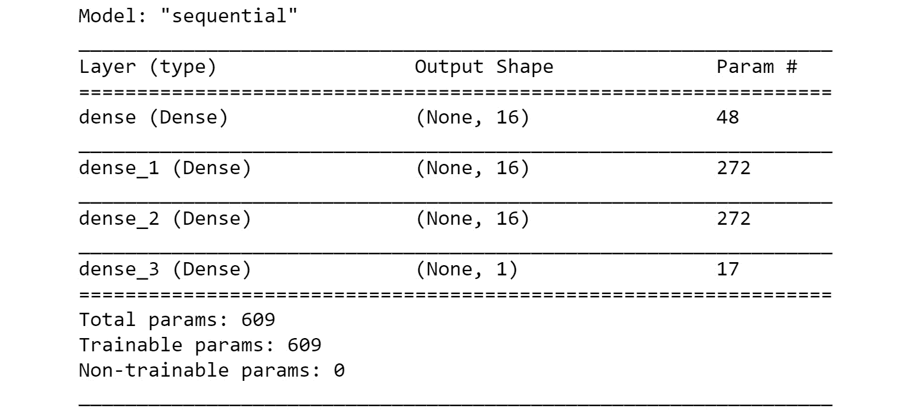图7.9:模型总结
从总结中，我们可以看到基于我们定义的体系结构的网络规模。我们可以看到，前三个密集层各有16个神经元，这是我们在构建鉴别器网络时在步骤7 中定义的。最后一层将只有一个输出，因为这是一个s形层。这将输出数据分布是真实(
1)还是虚假(0)的概率。 - Invoke the generator model function to be used in the training process:
# Calling the Generator model function Genmodel = genModel(infeats,outfeats) Genmodel.summary()
您应该得到以下输出:

图7.10:模型总结
您会注意到，该架构与我们在练习7.02、 构建生成网络中开发的架构相同。
- 现在，我们需要定义训练网络的时期数，如下:
# Defining the number of epochs nEpochs = 20000
- 现在，让我们开始训练鉴别器网络:
Exercise7.03.ipynb
# Train the discriminator network
for i in range(nEpochs):
# Generate the random number for generating real samples
loc = np.random.normal(3,1,1)
"""
Generate samples equal to the bath size
from the real distribution
"""
x_real, y_real = realData(loc,batch)
#Generate fake samples using the fake data generator function
x_fake, y_fake = fakedataGenerator(Genmodel,batch,infeats)
The complete code for this step can be found at https://packt.live/3fe02j3.
这里，我们在真实和虚假数据上迭代训练模型20，000个时期。经过一定程度的实验后，就可以得出纪元的数目。我们应该用不同的历元数值进行试验，直到我们得到一些精确的数字。对于每4000个时期，我们在真实数据集和虚假数据集上打印模型的准确性。打印频率是任意的，并且基于您想要查看的图的数量来检查训练过程的进度。训练后，你会看到鉴频器达到非常好的精度水平。
您应该会得到类似如下的输出:
Real accuracy:0.265625,Fake accuracy:0.59375 Real accuracy:1.0,Fake accuracy:0.828125 Real accuracy:1.0,Fake accuracy:0.90625 Real accuracy:1.0,Fake accuracy:0.9453125 Real accuracy:1.0,Fake accuracy:0.9453125
注意
因为我们在这里使用的是随机值，所以您得到的输出可能与您在这里看到的有所不同。它也会随着每次跑步而变化。
从准确度水平，我们可以看到鉴别器在最初识别真实数据集时非常好(准确度= 1 ),而对于虚假数据集显示出相对差的准确度水平。经过大约4000个时期后，我们可以看到鉴别器在识别伪数据集和真实数据集方面变得很好，因为两者的精度都接近1.0。
注意
要访问该特定部分的源代码，请参考https://packt.live/3fe02j3。
你也可以在https://packt.live/2ZYiYMG在线运行这个例子。您必须执行整个笔记本才能获得想要的结果。
在本练习中，我们定义了不同的助手函数，还构建了鉴别器函数。最后，我们在真实数据和虚假数据上训练鉴别器模型。在训练过程的最后，我们看到鉴别器学会了很好地区分真实数据集和虚假数据集。训练完鉴别器网络后，现在是时候进入高潮了，那就是构建GAN。
流程4–实施GAN
我们终于到了等待已久的时刻。在前三个过程中，我们逐步构建了GAN的所有构建模块，如伪数据发生器、真数据发生器、发生器网络和鉴别器网络。GAN实际上是所有这些构件的集成。GAN中真正的游戏是我们将这些组件相互集成的过程。让我们马上解决这个问题。
整合所有的积木
在构建鉴别器网络时，我们生成真实样本和虚假样本，并在训练期间将它们提供给鉴别器。训练过程使鉴别器变得“聪明”，这使它能够正确识别什么是假的，什么是真的。在概率方面，这将意味着当鉴别器得到假样本时，它将预测接近“0”的概率，而当样本是真的时，它将预测接近“1”的概率。然而，让鉴别器变得聪明并不是我们的最终目标。我们的最终目标是让生成器模型变得智能，以便它开始生成看起来像真实样本的示例，并在这个过程中欺骗鉴别器。这可以通过训练生成器并更新其参数(即权重和偏差)来实现，以使其能够生成看起来像真实样本的样本。然而，仍然存在一个问题，因为在生成器网络中，我们没有包括优化器步骤，因此生成器网络本身不能被训练。解决这个问题的方法是建立另一个网络(让我们称之为 Ganmodel )，它依次连接生成器和鉴别器，然后在新网络中包含一个优化器功能，以便当反向传播发生时，它可以更新其组成部分的参数。就伪代码而言，这个网络看起来像这样:
Ganmodel = Sequential() # First adding the generator model Ganmodel.add(Genmodel) """ Next adding the discriminator model without training the parameters """ Ganmodel.add(Discmodel) # Compile the model for loss to optimise the Generator model Ganmodel.compile(loss='binary_crossentropy',optimizer = 'adam')
在这个模型中，生成器模型将生成假样本，这些样本将被输入鉴别器模型，然后鉴别器模型将生成一个关于该示例是假还是真的概率。基于示例的标签，它将具有一定的损耗，该损耗将通过鉴别器传播到发电机，从而更新两个模型的参数。换句话说，基于损失，反向传播算法将基于参数相对于损失的梯度来更新每个参数。因此，这将解决我们没有为生成器定义优化器函数的问题。
然而，这个网络还有一个问题。我们的鉴别器网络已经被训练过，当我们单独训练鉴别器网络时，它变得非常智能。我们不想在这个新的网络中再次训练鉴别器模型，并使其更加智能。这可以通过定义我们不想在网络中训练鉴别器参数来解决。有了这个新的变化， Ganmodel 看起来如下:
# First define that discriminator model cannot be trained Discmodel.trainable = False Ganmodel = Sequential() # First adding the generator model Ganmodel.add(Genmodel) """ Next adding the discriminator model without training the parameters """ Ganmodel.add(Discmodel) # Compile the model for loss to optimise the Generator model Ganmodel.compile(loss='binary_crossentropy',optimizer = 'adam')
通过使Discmodel.trainable = False，我们告诉网络，我们不想在反向传播期间更新鉴别器网络的参数。因此，鉴频器网络将充当管道，在反向传播阶段将误差传递到发生器网络。
如果你认为我们所有的问题都解决了，那你就大错特错了。我们知道，当鉴别器模型呈现假分布时，它会将概率预测到非常接近0的值。我们还知道假数据集的标签也是0。因此，就损耗而言，传播回发电机的损耗非常小。由于损失如此之小，发电机模型参数的后续更新也将非常小。这将无法使生成器生成与真实样本相似的样本。发电机将只能知道是否产生了大的损耗并传播到它，以便它的参数在真实参数的方向上更新。那么，我们如何让损失变高呢？如果我们不把假冒样品的标签定义为0，而是定义为1会怎么样？如果我们这样做，鉴别器模型，像往常一样，将预测假样本的概率接近于0。然而，我们现在有一种情况，损失函数会很大，因为标签是1。当这个大损耗函数传播回发电机网络时，参数将显著更新，这将使它更加智能。随后，将会发生的是生成器将开始生成看起来更像真实样本的样本，并且它们将满足我们的目标。
这个概念可以用下图来解释。在这里，我们可以看到，在训练的初始阶段，假数据的概率接近于零(0.01)，我们给假数据的标签是1。这将确保我们获得一个大的损失，该损失被反向传播到发电机网络:
图7.11:氮化镓工艺
现在，我们已经了解了GAN模型的动态，让我们将所有部分联系在一起，定义构建GAN所需遵循的流程。
构建GAN的过程
GAN的完整流程就是将我们构建的各个部分按照逻辑顺序连接起来。我们将使用我们在定义鉴别器函数时构建的所有函数。另外，我们还会做新的功能；例如，一个函数用于鉴别器网络，另一个函数用于GAN模型。所有这些函数都将在特定的点被调用，以创建GAN模型。端到端流程如下:
- 定义生成真实数据分布的函数。该函数与我们在练习7.03 、中为鉴频器网络开发的实现鉴频器网络的函数相同。
- 定义为生成假样本而创建的三个函数。它们是用于生成假输入的函数、用于生成器网络的函数以及用于生成假样本和标签的函数。所有这些函数与我们在练习7.03 、中开发的用于鉴别器网络的鉴别器网络的函数相同。
- 为鉴频器网络创建一个新函数，就像我们在练习7.03 、实现鉴频器网络中创建的一样。此函数将输出要素(2)作为其输入，因为真实数据集和虚假数据集都有两个要素。这个函数将返回鉴别器模型。
- 按照我们在上一节中开发的伪代码为GAN模型创建一个新函数(流程4–构建GAN )。该函数将发电机模型和鉴别器模型作为其输入。
- 开始培训过程。
培训流程
此处的训练过程类似于我们在练习7.03 、为鉴频器网络实施鉴频器网络中实施的过程。培训过程的步骤如下:
- 生成一个随机数，然后使用生成真实样本函数生成一批真实样本及其标签。
- 使用我们描述的关于生成假样本的函数的第三个函数，生成一批假样本及其标签。第三个函数将使用其他两个函数来生成假样本。
- 使用该批真实样本和假样本，使用
train_on_batch()函数训练鉴别器模型。 - 生成另一批假输入来训练GAN模型。这些假样本是在假样本生成过程中使用功能1 生成的。
- 为假样本生成标签，以欺骗鉴别者。这些标签将是1而不是0。
- 按照步骤4 和步骤5 中所述，使用
train_on_batch()功能使用假样本及其标签训练GAN模型。 - 步骤1 到 6 重复我们希望训练运行的次数。这是通过在多个历元上的
for循环来完成的。 - 在每一个中间步骤，我们使用
evaluate()函数计算模型在假样本和真样本上的准确性。还会打印模型的精度。 - 我们还在特定时期生成输出图。
现在我们已经看到了训练GAN背后的完整过程，让我们深入到练习7.04 、实现GAN ，它实现了这个过程。
练习7.04:实施GAN
在本练习中，我们将通过实施我们在上一节中讨论的过程来构建和训练GAN。按照以下步骤完成本练习:
- 打开一个新的Jupyter笔记本，命名为
Exercise 7.04。导入以下库包:# Import the required library functions import tensorflow as tf import numpy as np from numpy.random import randn from tensorflow.keras.models import Sequential from tensorflow.keras.layers import Dense from matplotlib import pyplot
- Let's create a function to generate the real samples:
Exercise7.04.ipynb # Function to generate real samples def realData(loc,batch): """ loc is the random location or mean around which samples are centred """ # Generate numbers to right of the random point xr = np.arange(loc,loc+(0.1*batch/2),0.1) xr = xr[0:int(batch/2)] # Generate numbers to left of the random point xl = np.arange(loc-(0.1*batch/2),loc,0.1) The complete code for this step can be found on https://packt.live/3iIJHVS我们在这里创建的函数遵循我们在练习7.01 、中实现的相同过程，从已知函数生成数据分布。这个函数的输入是随机数和批量大小。从这个函数中，我们获得了两个特性的实际数据分布，以及作为返回值的实际数据分布的标签。这个函数的返回值是真实的数据集及其标签。
- Here, let's define the function to generate inputs for the generator network:
# Function to generate inputs for generator function def fakeInputs(batch,infeats): """ Sample data points equal to (batch x input feature size) from a random distribution """ genInput = randn(infeats * batch) # Reshape the input X = genInput.reshape(batch ,infeats) return X该函数生成从随机分布中采样的假数据作为输出。
- Now, let's go ahead and define the function for building the generator network:
# Function for the generator model def genModel(infeats,outfeats): # Defining the Generator model Genmodel = Sequential() Genmodel.add(Dense(32,activation = 'linear',\ kernel_initializer='he_uniform',\ input_dim=infeats)) Genmodel.add(Dense(32,activation = 'relu',\ kernel_initializer='he_uniform')) Genmodel.add(Dense(64,activation = 'elu',\ kernel_initializer='he_uniform')) Genmodel.add(Dense(32,activation = 'elu',\ kernel_initializer='he_uniform')) Genmodel.add(Dense(32,activation = 'selu',\ kernel_initializer='he_uniform')) Genmodel.add(Dense(outfeats,activation = 'selu')) return Genmodel这与我们在练习7.02、 构建生成网络中构建的功能相同。该函数返回发电机模型。
- In this step, we will define the function that will create fake samples using the generator network:
# Function to create fake samples using the generator model def fakedataGenerator(Genmodel,batch,infeats): # first generate the inputs to the model genInputs = fakeInputs(batch,infeats) """ use these inputs inside the generator model to generate fake distribution """ X_fake = Genmodel.predict(genInputs) # Generate the labels of fake data set y_fake = np.zeros((batch,1)) return X_fake,y_fake我们在这里定义的函数将随机数据分布作为输入(到我们在上一步中定义的生成器网络)并生成假分布。假分布的标签0也在函数中生成。换句话说，这个函数的输出是假数据集及其标签。
- 现在，让我们定义我们将在不同函数中使用的参数:
""" Define the arguments like batch size,input feature size and output feature size """ batch = 128 infeats = 10 outfeats = 2
- Next, let's build the discriminator model as a function:
# Discriminator model as a function def discModel(outfeats): Discmodel = Sequential() Discmodel.add(Dense(16, activation='relu',\ kernel_initializer = 'he_uniform',\ input_dim=outfeats)) Discmodel.add(Dense(16,activation='relu' ,\ kernel_initializer = 'he_uniform')) Discmodel.add(Dense(16,activation='relu' ,\ kernel_initializer = 'he_uniform')) Discmodel.add(Dense(1,activation='sigmoid')) # Compiling the model Discmodel.compile(loss='binary_crossentropy',\ optimizer='adam',metrics=['accuracy']) return Discmodel网络架构将类似于我们在练习7.03 、实施鉴别器网络中开发的网络架构。这个函数将返回鉴别器。
- Print the summary of the discriminator network:
# Print the summary of the discriminator model Discmodel = discModel(outfeats) Discmodel.summary()
您应该得到以下输出:
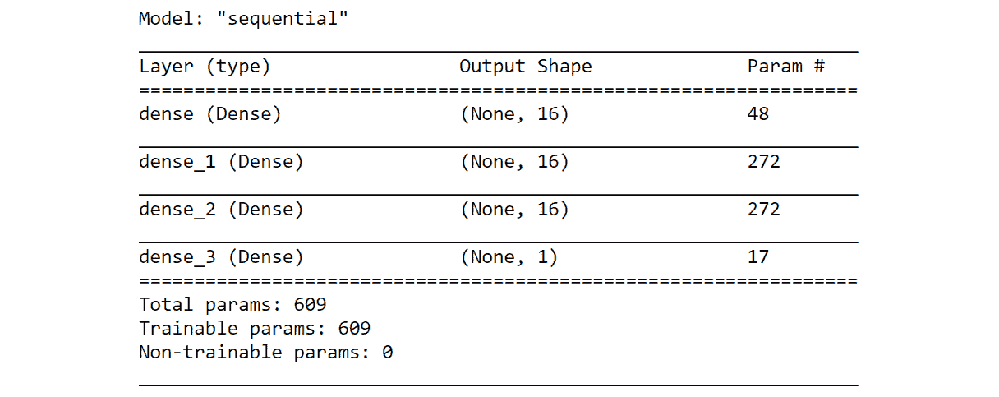图7.12:鉴别器模型总结
该输出与我们在练习7.03 ，中实现的网络中接收到的输出相同，在该练习中我们定义了鉴别器功能。
- Invoke the generator model function for use in the training process:
# Calling the Generator model function Genmodel = genModel(infeats,outfeats) Genmodel.summary()
您应该得到以下输出:
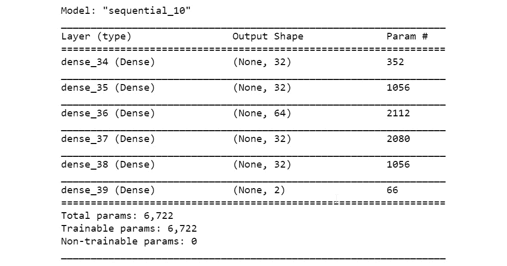图7.13:发电机型号汇总
您会注意到，该架构与我们在练习7.02、 构建生成网络中开发的架构相同。
- Before we begin training, let's visualize the fake data distribution. For this, we generate the fake dataset using the
fakedataGenerator()function and then visualize it usingpyplot:# Let us visualize the initial fake data x_fake, _ = fakedataGenerator(Genmodel,batch,infeats) # Plotting the fake data using pyplot pyplot.scatter(x_fake[:, 0], x_fake[:, 1], color='blue') # Adding x and y labels pyplot.xlabel('Feature 1 of the distribution') pyplot.ylabel('Feature 2 of the distribution') pyplot.show()您应该会得到类似下面的输出。请注意，数据生成本质上是随机的(random ),您可能不会得到相同的图:
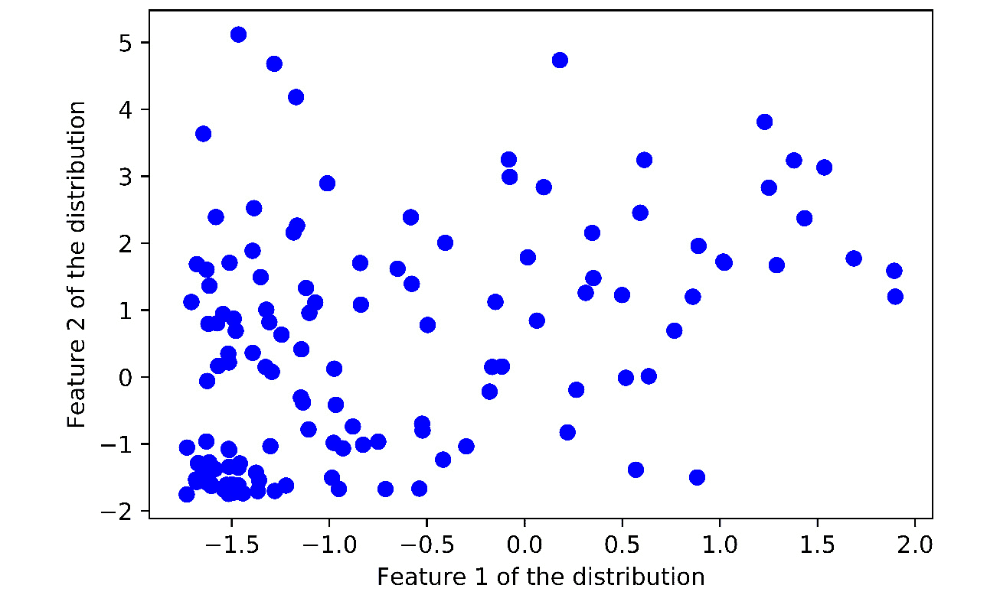图7.14:伪输入分布图
从前面的图中，您可以看到数据分布非常随机。我们需要将这种随机数据转换成类似正弦波的形式，这就是我们真实的数据分布。
- Now, let's define the GAN model as a function. This function is similar to the pseudocode we developed in Process 4, where we defined the GAN. The GAN is a wrapper model around the generator model and the discriminator model. Please note that we define the discriminator model as not trainable within this function:
""" Define the combined generator and discriminator model, for updating the generator """ def ganModel(Genmodel,Discmodel): # First define that discriminator model cannot be trained Discmodel.trainable = False Ganmodel = Sequential() # First adding the generator model Ganmodel.add(Genmodel) """ Next adding the discriminator model without training the parameters """ Ganmodel.add(Discmodel) # Compile the model for loss to optimise the Generator model Ganmodel.compile(loss='binary_crossentropy',optimizer = 'adam') return Ganmodel该函数将返回GAN模型。
- 现在，让我们调用GAN函数。请注意，GAN模型的输入是之前定义的发电机模型和鉴别器模型:
# Initialise the gan model gan_model = ganModel(Genmodel,Discmodel)
- Print the summary of the GAN model:
# Print summary of the GAN model gan_model.summary()
您应该得到以下输出:
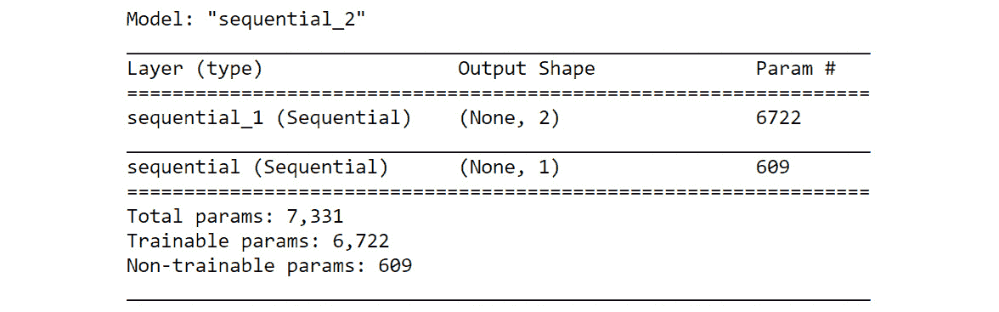图7.15:GAN模型总结
注意，GAN模型的每一层的参数等同于发生器和鉴别器模型的参数。GAN模型只是我们之前定义的这两个模型的包装。
- 让我们定义训练网络的历元数:
# Defining the number of epochs nEpochs = 20000
- 现在，我们开始训练网络的过程:
Exercise7.04.ipynb
# Train the GAN network
for i in range(nEpochs):
# Generate the random number for generating real samples
loc = np.random.normal(3,1,1)
"""
Generate samples equal to the bath size
from the real distribution
"""
x_real, y_real = realData(loc,batch)
#Generate fake samples using the fake data generator function
x_fake, y_fake = fakedataGenerator(Genmodel,batch,infeats)
# train the discriminator on the real samples
Discmodel.train_on_batch(x_real, y_real)
# train the discriminator on the fake samples
Discmodel.train_on_batch(x_fake, y_fake)
The complete code for this step can be found at https://packt.live/3iIJHVS
这里需要注意的是，用假样本和真样本训练鉴别器模型以及训练GAN模型是同时发生的。唯一的区别是训练GAN模型在不更新鉴别器模型的参数的情况下进行。另一件要注意的事情是，在GAN内部，假样本的标签将是1。这是为了产生大的损耗项，该损耗项将通过鉴频器网络反向传播，以更新发电机参数。
注意:
请注意，倒数第三行代码(filename = 'GAN_Training_Plot%03d.png' % (i))每2000个纪元保存一次绘图。这些图将保存在Jupyter笔记本所在的文件夹中。您也可以指定要保存图的路径。这可以通过以下方式完成:
filename = 'D:/Project/GAN_Training_Plot%03d.png' % (i)
您可以在https://packt.live/2W1FjaI访问通过该练习生成的图。
您应该会得到类似如下所示的输出。由于预测在本质上是随机的(也就是说，它们是随机的)，您可能不会得到与本例中所示相同的图。你的价值观可能会有所不同；但是，它们将类似于此处显示的内容:
Real accuracy:0.2421875,Fake accuracy:0.0234375 Real accuracy:0.625,Fake accuracy:0.609375 Real accuracy:0.6484375,Fake accuracy:0.9609375 Real accuracy:0.84375,Fake accuracy:0.734375 Real accuracy:0.3671875,Fake accuracy:0.734375 Real accuracy:0.53125,Fake accuracy:0.703125 Real accuracy:0.578125,Fake accuracy:0.640625 Real accuracy:0.640625,Fake accuracy:0.8203125 Real accuracy:0.515625,Fake accuracy:0.7109375 Real accuracy:0.5625,Fake accuracy:0.859375
从前面的输出中，您可以看到真实数据集的精度水平在逐渐下降，而虚假数据集的精度在上升。在理想情况下，鉴频器网络的精度必须在0.5左右，这表明鉴频器真的不知道样品是真是假。现在，让我们看看在不同时期生成的一些图，看看数据点如何收敛，看起来像真正的函数。下面的图是随机数据点在被送入GAN之前的分布(步骤10 ):
图7.16:伪输入分布图
请注意数据的分布，其中数据点主要集中在平均值0上。这是因为随机点是从平均值为0、标准差为1的正态分布中生成的。现在，使用原始数据，让我们研究假数据集在生成器被训练时的进展。
注意
要访问该特定部分的源代码，请参考https://packt.live/3iIJHVS。
你也可以在https://packt.live/3gF5DPW在线运行这个例子。您必须执行整个笔记本才能获得想要的结果。
下面显示的三幅图描绘了虚假数据分布相对于真实数据分布的发展过程。 x 轴代表特征1，而 y 轴代表特征2。在图中，红点属于真实分布的数据，蓝色图属于虚假分布的数据。从下面的情节可以看出，在2000时期，假情节在域内；但是，它们与真实数据分布的形状不一致。
图7.17:2000年假数据分布与真实数据分布的关系图
到了时期10000，即发生器已经被训练了几乎一半的时候，有一个更接近真实数据分布的合并:
图7.18:10000年时伪数据分布与真实数据分布的对比图
通过历元18000，我们可以看到大多数点与真实数据分布一致，这表明GAN已经被训练得相当好。
图7.19:假数据分布与18000年时期真实数据分布的对比图
然而，你可以看到x = 4之后的数据点比左边的数据点有更多的噪声。一个原因可能是我们在训练 GAN(步骤10) 之前生成的随机数据分布包含主要分布在-2和4之间的数据。这些数据与相同范围内的目标分布(正弦波)很好地对齐，并且在x = 4右侧的目标分布周围有点不稳定。然而，您还应该注意到，获得与目标分布的100%一致是一个极其困难的命题，这将涉及到不同模型架构的实验和更多的实验。我们鼓励您尝试和创新架构中的不同组件，以使发行版更加一致。
注意
我们在上面的练习中得到的结果在每次运行代码时都会有所不同。
这使我们逐渐构建GAN的完整过程接近尾声。通过一系列的练习，我们已经了解了什么是GAN，它的组成部分，以及它们是如何结合在一起训练GAN的。我们将利用我们所学到的知识，使用不同的数据集开发更先进的GANs。
深度卷积GANs
在前面的章节中，我们实现了一个GAN，我们使用了一个基于多层感知器 ( MLP )的架构。您可能还记得前面的章节，MLP具有完全连接的层。这意味着每一层中的所有神经元都与下一层的所有神经元有连接。因此，多层也称为全连接层。我们上一节开发的GAN也可以称为全连接GAN ( FCGAN )。在本节中，我们将了解另一种称为深度卷积GANs ( DCGANS )的架构。顾名思义，这是基于卷积神经网络 ( CNN )架构，你在第四章、文本深度学习——嵌入中了解到的。让我们重温一下DCGANs的一些构建模块。
DCG an的构建模块
DCGANs的大部分构建模块类似于你在第三章、卷积神经网络图像分类中向CNN介绍的内容。让我们重温一些重要的。
卷积层
正如您在第3章、使用卷积神经网络进行图像分类中所了解到的，卷积运算涉及过滤器或内核在输入图像上移动以生成一组特征图。卷积层可以使用以下代码行在Keras中实现:
from tensorflow.keras import Sequential
model = Sequential()
model.add(Conv2D(64, kernel_size=(5, 5),\
strides=(2,2), padding='same'))
注意
上面的代码块仅仅是为了解释代码是如何实现的。当以当前形式运行时，它可能不会产生理想的输出。现在，试着完全理解语法；我们将很快实施这一准则。
在前面代码的第一部分中，Sequential()类是从tensorflow.keras模块导入的。然后在第二行代码中将它实例化为一个变量模型。通过定义过滤器的数量、内核大小、所需步幅和填充指示符，卷积层被添加到Sequential()类中。在前面的代码行中，64表示特征映射的数量。(5,5)的kernel_size值指示将在输入图像上卷积以生成特征图的滤波器的大小。(2,2)的strides值表示在生成特征图的过程中，过滤器将一次水平和垂直移动两个单元。padding = 'same'表示我们希望卷积运算的输出与输入大小相同。
注意:
选择要使用的架构，比如过滤器的数量、内核的大小、步幅等等，是一门艺术，可以通过大量的领域实验来掌握。
激活功能
在上一节中，我们实现了一些激活函数，如ReLU、eLU、SELU和线性函数。在本节中，我们将介绍另一个名为LeakyReLU的激活函数。LeakyReLU是ReLU的另一个变种。与不允许任何负值的ReLU不同，LeakyReLU允许由因子α控制的小非零梯度。该因子α控制负值的梯度斜率。
上采样操作
在CNN中，通过最大池和卷积运算等操作，图像被下采样到更低的维度。然而，在GAN中，生成器网络的动态操作方向与卷积操作方向相反；也就是说，从更低或更粗糙的维度，我们必须将图像转换为更密集的形式(即，具有更多维度)。一种方法是通过名为UpSampling的操作。在此操作中，输入维度加倍。让我们用一个小例子来更详细地理解这个操作。
以下代码可用于导入所需的库文件。UpSampling特有的功能是keras.layers的UpSampling2D:
from tensorflow.keras.models import Sequential from tensorflow.keras.layers import UpSampling2D
下面的代码创建了一个简单的模型，它将一个形状为(3,3,1)的数组作为UpSampling层的输入:
# A model for UpSampling2d model = Sequential() model.add(UpSampling2D(input_shape=(3,3,1))) model.summary()
输出如下所示:
图7.20:向上采样2D的模型总结
从总结中我们可以看到，产量已经翻倍到(None, 6,6,1)，其中中间两个维度翻倍。为了理解这给形状为(3,3,1)的数组带来了什么变化，我们需要定义一个大小为(3,3)的数组，如下所示:
# Defining an array of shape (3,3) import numpy as np X = np.array([[1,2,3],[4,5,6],[7,8,9]]) X.shape
输出如下所示:
(3, 3)
我们定义的数组只有二维。然而，我们定义的模型的输入需要四个维度，其中维度的顺序是(examples, width, height, channels)。我们可以使用reshape()功能创建额外的尺寸，如下所示:
# Reshaping the array X = X.reshape((1,3,3,1)) X.shape
输出如下所示:
(1, 3, 3, 1)
我们可以使用下面的代码用我们创建的UpSampling模型进行一些预测，并观察结果数组的维数:
# Predicting with the model y = model.predict(X) # Printing the output shape y[0,:,:,0]
输出如下所示:
图7.21:未采样模型的输出形状
从前面的输出中，我们可以看到结果数组是如何转换的。正如我们所看到的，每个输入都被加倍以得到结果数组。我们将在练习7.05 、中使用UpSampling方法实现DCGAN 。
转置卷积
转置卷积不同于我们刚才看到的UpSampling方法。UpSampling或多或少是输入值的简单加倍。然而，转置卷积具有在训练阶段学习的权重。转置卷积的工作方式类似于卷积运算，但方向相反。转置卷积不是减少维度，而是通过结合内核大小及其步长来扩展输入的维度。正如在第3章、利用卷积神经网络进行图像处理中所了解到的，步长是我们在图像上卷积或移动滤波器以获得输出的步长。我们还使用padding = 'same'参数控制转置卷积的输出，就像我们在卷积运算中所做的一样。
让我们看一个转置卷积如何工作的代码示例。
首先，我们需要导入必要的库文件。专用于转置卷积运算的函数是keras.layers中的Conv2DTranspose:
from tensorflow.keras.models import Sequential from tensorflow.keras.layers import Conv2DTranspose
现在，我们可以创建一个简单的模型，在转置卷积层中拍摄形状为(3,3,1)的图像:
# A model for transpose convolution
model = Sequential()
model.add(Conv2DTranspose(1,(4,4),(2,2),\
input_shape=(3,3,1),padding='same'))
model.summary()
在转置卷积层中，第一个参数(1)是滤波器的数量。第二个(4,4)是内核的大小，最后一个(2,2)是步幅。使用padding = 'same'，输出将不再取决于内核的大小，而是步幅和输入维度的倍数。前面的代码将生成如下摘要:
图7.22:模型概要
从摘要中，我们可以看到输出增加了一倍，达到了(None, 6,6,1)，它的工作原理就像是步幅乘以输入维度(无，2 × 3，2 × 3，1)。
现在，让我们看看实际的形状数组(1,3,3,1)会发生什么变化。请记住，我们之前也创建了这个数组:
# Defining an array of shape (3,3) X = np.array([[1,2,3],[4,5,6],[7,8,9]]) X = X.reshape((1,3,3,1)) X.shape
输出如下所示:
(1, 3, 3, 1)
为了生成转置数组，我们需要使用我们创建的转置卷积模型进行一些预测。通过打印形状，我们还可以观察到生成的数组的尺寸:
# Predicting with the model y = model.predict(X) # Printing the shape print(y.shape) # Printing the output shape y[0,:,:,0]
输出如下所示:
图7.23:转换后的数组
注意
您得到的输出可能与上面显示的有所不同。
从前面的输出中，我们可以看到结果数组是如何转换的。生成的数组中的值是输入图像上的核的权重之间的动态变化的最终结果。
现在，我们已经了解了DCGAN的一些基本构建模块，我们将在下一个练习中继续构建它。
使用DCGANs生成手写图像
现在，我们将尝试使用DCGAN生成一个类似于手写数字的数据分布。我们将使用MNIST手写数字数据集作为真实数据集。这个数据集有60，000个样本的训练集，所有样本都是从0到9的数字的手写图像。该GAN的实施过程将类似于练习7.04 、实施GAN ，其中我们实施了已知功能的GAN。让我们来看看这个问题陈述将遵循的步骤。
首先，我们需要定义用于生成真实数据分布的函数:
# Get the MNIST data
(X_train, _), (_, _) = mnist.load_data()
上述函数将从MNIST数据集生成真实的数据分布。可以使用mnist.load_data()功能生成训练集和测试集。使用这个函数，我们以(X_train,y_train)，(X_test,y_test)的形式获得所有相关的数据集。因为我们只需要X_train数据，所以我们不将其他数据集存储在变量中。
MNIST数据是二维的；也就是，(宽度，高度)。由于我们需要三维数据(宽度、高度、通道)进行卷积运算，因此我们需要使用np.newaxis函数创建第三个维度为1。请注意，第一个维度将是示例的数量:
# Reshaping the input data to include channel
X = X_train[:,:,:,np.newaxis]
# Generating a batch of data
imageBatch = X[np.random.randint(0, X.shape[0], size=batch)]
另一个过程是生成成批的训练数据。为了生成批量数据，我们对0和训练集中的样本数之间的一些整数进行采样。样品的大小将等于我们想要的批量。这是通过以下方式实现的:
# Generating a batch of data
imageBatch = X[np.random.randint(0, X.shape[0], size=batch)]
我们将只返回X变量。在训练过程中，将单独生成一批1的标签。
然后，我们需要定义将用于生成假样本的三个函数。它们是用于生成假输入的函数、用于生成器网络的函数以及用于生成假样本和标签的函数。这些函数中的大部分与我们在练习7.04 、中开发的实现GAN 的函数相同。生成器模型将被构建为卷积模型，并间歇使用上采样/转换2d转置操作。
接下来，我们需要为鉴频器网络创建一个新函数。这个鉴别器模型也是一个卷积模型，最后一层是sigmoid层，我们输出一个概率，即图像真假的概率。鉴别器模型的输入维度将是从MNIST和伪图像生成的图像的维度，其将是(批量大小，28，28，1)。
GAN模型将与我们在练习7.04 、实施GAN中创建的模型相同。该函数将发电机模型和鉴别器模型作为其输入。
培训流程
培训过程将类似于我们在练习7.04、 实施GAN 中实施的过程。培训过程的步骤如下:
- 使用函数生成真实数据集来生成一批MNIST数据。
- 使用生成假样本功能中描述的功能3 生成一批假样本。
- 将真样本和假样本连接成一个数据帧。这将是鉴别器模型的输入变量。
- 标签将是一系列1和0，对应于之前连接的真实数据和虚假数据。
- 使用
X变量和标签，通过train_on_batch()功能训练鉴别器模型。 - 生成另一批假输入用于训练GAN模型。这些假样本是在假样本生成过程中使用功能1 生成的。
- 为假样本生成标签，以欺骗鉴别者。这些标签将是1而不是0。
- 按照步骤6 和步骤7 所述，使用
train_on_batch()功能使用假样本及其标签训练GAN模型。 - 步骤1 到 8 重复我们希望训练运行的次数。这是通过在多个历元上的
for循环来完成的。 - 在每个中间步骤，我们计算鉴别器模型的精度。
- 我们还在特定时期生成输出图。
现在，我们已经看到了训练DCGAN的完整过程，让我们进入下一个练习，它实现了这个过程。
练习7.05:实施DCGAN
在本练习中，我们将在MNIST数据集上构建和训练DCGAN。我们将使用MNIST数据集作为真实的数据分布。然后，我们将从随机分布中生成假数据。之后，我们将训练GAN生成类似于MNIST数据集的数据。按照以下步骤完成本练习:
- 打开一个新的Jupyter笔记本，命名为
Exercise 7.05。导入以下库包和MNIST数据集:# Import the required library functions import numpy as np import matplotlib.pyplot as plt from matplotlib import pyplot import tensorflow as tf from tensorflow.keras.layers import Input from tensorflow.keras.initializers import RandomNormal from tensorflow.keras.models import Model, Sequential from tensorflow.keras.layers \ import Reshape, Dense, Dropout, Flatten,Activation from tensorflow.keras.layers import LeakyReLU,BatchNormalization from tensorflow.keras.layers \ import Conv2D, UpSampling2D,Conv2DTranspose from tensorflow.keras.datasets import mnist from tensorflow.keras.optimizers import Adam
- Define the function that will be used to generate real datasets. The real dataset is generated from the MNIST data:
# Function to generate real data samples def realData(batch): # Get the MNIST data (X_train, _), (_, _) = mnist.load_data() # Reshaping the input data to include channel X = X_train[:,:,:,np.newaxis] # normalising the data X = (X.astype('float32') - 127.5)/127.5 # Generating a batch of data imageBatch = X[np.random.randint(0, X.shape[0], size=batch)] return imageBatch这个函数的返回值是MNIST数据的批次。注意，我们通过减去最大像素值(255)的一半
127.5，并除以相同的量，来归一化输入数据。这将有助于更快地收敛解决方案。 - 现在，让我们从MNIST数据集生成一组图像:
# # Generating a batch of images mnistData = realData(25)
- Next, let's visualize the plots using
matplotlib:# Plotting the image for j in range(5*5): pyplot.subplot(5,5,j+1) # turn off axis pyplot.axis('off') pyplot.imshow(mnistData[j,:,:,0],cmap='gray_r')您应该会得到类似如下的输出:
图7.24:可视化数据——数据集中的数字
从输出中，我们可以看到一些数字的可视化。我们可以看到图像位于白色背景的中央。
注意
运行代码时显示的数字将与我们在这里显示的不同。
- 定义为发电机网络生成输入的函数。伪数据将是从均匀分布中产生的随机数据点:
# Function to generate inputs for generator function def fakeInputs(batch,infeats): #Generate random noise data with shape (batch,input features) x_fake = np.random.uniform(-1,1,size=[batch,infeats]) return x_fake
- Let's define the function for building the generator network. Building the generator network is similar to building any CNN network. In this generator network, we will use the
UpSamplingmethod:Exercise7.05.ipynb # Function for the generator model def genModel(infeats): # Defining the Generator model Genmodel = Sequential() Genmodel.add(Dense(512,input_dim=infeats)) Genmodel.add(Activation('relu')) Genmodel.add(BatchNormalization()) # second layer of FC => RElu => BN layers Genmodel.add(Dense(7*7*64)) Genmodel.add(Activation('relu')) The complete code for this step can be found on https://packt.live/2ZPg8cJ.在该模型中，我们可以看到转置卷积运算的渐进使用。初始输入的维度为100。通过一系列的转置卷积操作，这逐渐增加到批量尺寸×28×28的期望图像尺寸。
- Next, we define the function to create fake samples. In this function, we only return the
Xvariable:# Function to create fake samples using the generator model def fakedataGenerator(Genmodel,batch,infeats): # first generate the inputs to the model genInputs = fakeInputs(batch,infeats) """ use these inputs inside the generator model to generate fake distribution """ X_fake = Genmodel.predict(genInputs) return X_fake这个函数的返回值是假数据集。
- Define the parameters that we will use, along with the summary of the generator network:
# Define the arguments like batch size and input feature batch = 128 infeats = 100 Genmodel = genModel(infeats) Genmodel.summary()
您应该得到以下输出:
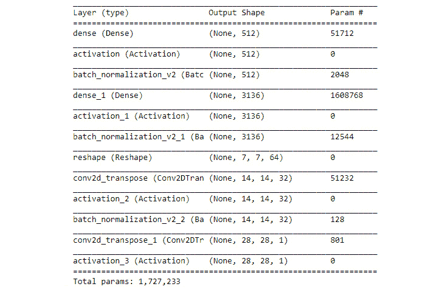图7.25模型总结
从总结中，请注意输入的维数如何随着每个转置卷积运算而变化。最后，我们得到一个与真实数据集维数相等的输出:
(None,28 ,28,1)。 - Let's use the generator function to generate a fake sample before training:
# Generating a fake sample and printing the shape fake = fakedataGenerator(Genmodel,batch,infeats) fake.shape
您应该得到以下输出:
(128, 28, 28, 1)
- Now, let's plot the generated fake sample:
# Plotting the fake sample plt.imshow(fake[1, :, :, 0], cmap='gray_r') plt.xlabel('Fake Sample Image')您应该会得到类似如下所示的输出:
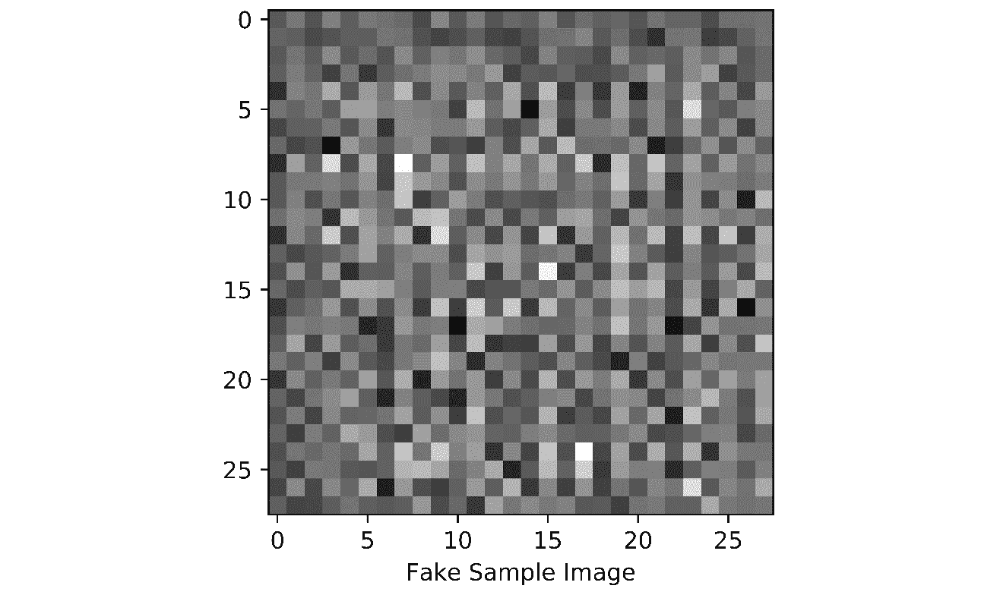图7.26:假样本图像的绘图
这是训练前假样本的情节。训练后，我们希望这些样本看起来像我们在本练习前面可视化的MNIST样本。
- Now, let's build the discriminator model as a function. The network will be a CNN network like the one you learned about in Chapter 3, Image Classification with Convolutional Neural Networks:
Exercise7.05.ipynb # Descriminator model as a function def discModel(): Discmodel = Sequential() Discmodel.add(Conv2D(32,kernel_size=(5,5),strides=(2,2), \ padding='same',input_shape=(28,28,1))) Discmodel.add(LeakyReLU(0.2)) # second layer of convolutions Discmodel.add(Conv2D(64, kernel_size=(5,5), \ strides=(2, 2), padding='same')) The complete code for this step can be found on https://packt.live/2ZPg8cJ.在鉴别器网络中，我们包括了所有必要的层，例如卷积运算和LeakyReLU激活。请注意，最后一层是sigmoid层，因为我们希望输出样本为真实(1)或虚假(0)的概率。
- Print the summary of the discriminator network:
# Print the summary of the discriminator model Discmodel = discModel() Discmodel.summary()
您应该得到以下输出:
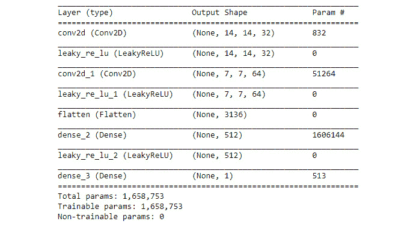图7.27:模型架构概要
前面的屏幕截图显示了模型架构的概要。这是基于我们使用
Sequential类实现的不同层。例如，我们可以看到第一层有32个过滤贴图，第二层有64个过滤贴图，最后一层有一个对应于sigmoid激活的输出。 - Next, define the GAN model as a function:
""" Define the combined generator and discriminator model, for updating the generator """ def ganModel(Genmodel,Discmodel): # First define that discriminator model cannot be trained Discmodel.trainable = False Ganmodel = Sequential() # First adding the generator model Ganmodel.add(Genmodel) """ Next adding the discriminator model without training the parameters """ Ganmodel.add(Discmodel) # Compile the model for loss to optimise the Generator model Ganmodel.compile(loss='binary_crossentropy',\ optimizer = 'adam') return GanmodelGAN模型的结构类似于我们在练习7.04 、实现GAN 中开发的模型。
- Now, it's time to invoke the GAN function. Please note that the inputs to the GAN model are the previously defined generator and discriminator models:
# Initialise the gan model gan_model = ganModel(Genmodel,Discmodel) # Print summary of the GAN model gan_model.summary()
从前面的代码中，我们可以看到GAN模型的输入是之前定义的生成器和鉴别器模型。您应该得到以下输出:
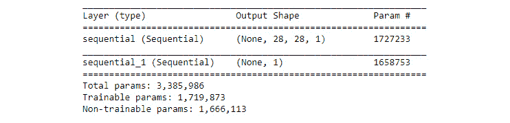图7.28:模型总结
请注意，GAN模型各层的参数与发生器和鉴别器模型的参数是等效的。GAN模型只是我们之前定义的模型的包装。
- 定义训练网络的历元数:
# Defining the number of epochs nEpochs = 5000
- Now, let's train the GAN:
Exercise7.05.ipynb # Train the GAN network for i in range(nEpochs): """ Generate samples equal to the bath size from the real distribution """ x_real = realData(batch) #Generate fake samples using the fake data generator function x_fake = fakedataGenerator(Genmodel,batch,infeats) # Concatenating the real and fake data X = np.concatenate([x_real,x_fake]) #Creating the dependent variable and initializing them as '0' Y = np.zeros(batch * 2) The full code for this step can be found at https://packt.live/2ZPg8cJ.从前面的代码中，我们可以看到，利用假样本和真样本训练鉴别器模型以及训练GAN模型是同时发生的。唯一的区别是GAN模型的训练在没有更新鉴别器模型的参数的情况下进行。另一点需要注意的是，在GAN内部，伪样本的标签将为1，从而产生大量损耗项，这些损耗项将通过鉴频器网络反向传播，以更新发生器参数。我们还显示了每10个时期GAN的预测概率。在计算概率时，我们将真实数据和虚假数据的样本结合起来，然后取预测概率的平均值。我们还保存了生成图像的副本。
Discriminator probability:0.6213402152061462 Discriminator probability:0.7360671758651733 Discriminator probability:0.6130768656730652 Discriminator probability:0.5046337842941284 Discriminator probability:0.5005484223365784 Discriminator probability:0.50015789270401 Discriminator probability:0.5000558495521545 Discriminator probability:0.5000174641609192 Discriminator probability:0.5000079274177551 Discriminator probability:0.4999823570251465 Discriminator probability:0.5000027418136597 Discriminator probability:0.5000032186508179 Discriminator probability:0.5000043511390686 Discriminator probability:0.5000077486038208
注意
前面代码的输出可能与您运行代码时得到的结果不完全匹配。
从测试数据的预测概率可以看出，数值都在
.55关口附近徘徊。这表明鉴别者分不清图像是假的还是真的。如果鉴别器确定一幅图像是真实的，它将预测接近1的概率，而如果它确定图像是假的，它将预测接近0的概率。在我们的例子中，我们可以看到概率在. 55左右，这表明生成器正在学习生成与真实图像相似的图像。这让鉴别者很困惑。鉴频器接近50%准确度的值是期望值。 - Now, let's generate fake images after the training process and visualize them:
# Images predicted after training x_fake = fakedataGenerator(Genmodel,25,infeats) # Visualizing the plots for j in range(5*5): pyplot.subplot(5,5,j+1) # turn off axis pyplot.axis('off') pyplot.imshow(x_fake[j,:,:,0],cmap='gray_r')输出如下所示:
图7.29:训练后预测图像
我们可以看到，从经过训练的生成器模型生成的图像与真实的手写数字紧密共振。
注意
要访问该特定部分的源代码，请参考https://packt.live/2ZPg8cJ的。
本节目前没有在线交互示例，需要在本地运行。
在本练习中，我们开发了一个GAN来生成类似于MNIST手写数字的分布。在接下来的部分中，我们将分析在本次练习中每个时期生成的图像。
样地分析
现在，让我们看看上一个练习的输出示例图，看看生成的图像是什么样的。通过完成前面的练习，这些应该已经保存在Jupyter笔记本所在的同一路径中，在名为handwritten的子文件夹下:
图7.30:10次迭代后的样本图
前面的图像是在10次迭代后生成的图像。我们可以看到这些图像看起来更像随机噪声。然而，我们还可以看到图像中有白色斑块形成的痕迹，这表明GAN正在学习真实图像的一些特征:
图7.31:500次迭代后的样本图
前面的图像是500次迭代后的图。从这些图像中，我们可以看到真实图像的一些表象。我们可以看到实像的白色背景正在形成。我们还可以看到分布在图像的中心聚集在一起:
图7.32:2000次迭代后的样本图
前面的图像经过了2000次迭代。我们可以看到许多数字已经开始形成；例如，8、5、3、9、4、7、0等等。我们还可以看到图像的暗色调开始变得更加明显。现在，让我们看看在最后一次迭代中生成的图像:
图7.33:5000次迭代后的样本图
在这个阶段要问的一个问题是，这些图像是完美的吗？绝对不行。运行更多时期的训练会进一步改善结果吗？不一定。获得这些完美的图像需要数小时的训练和不同模型架构的实验。您可以将此视为一个挑战，通过选择架构和模型中的参数来提高输出。
GANs是一个非常活跃的研究领域，它们所开启的可能性指出了计算机慢慢变得有创造力的方向。然而，在实现GANs时有一些常见的问题。让我们来看看其中的一些。
gan的常见问题
GANs是很难训练和稳定的网络。天然气水合物具有不同的失效模式。让我们了解一些常见的故障模式。
模式崩溃
GANs的一个非常常见的故障模式，特别是在多模态数据上，是一种叫做模态崩溃的情况。这指的是发生器仅学习数据内分布的某些特定变化的情况。例如，在MNIST数据分布中，如果GAN在训练后只生成一个特定的数字(比如说5)，那么这就是模式崩溃的情况。
对抗模式崩溃的一种方法是根据不同的类别对数据进行分组，并相应地训练鉴别器。这将赋予鉴别器识别数据中存在的不同模式的能力。
收敛失败
GANs中另一个突出的故障模式是收敛故障。在这种故障模式下，网络无法收敛于损耗，因为它在训练阶段从未稳定下来。研究人员用来克服这个问题的一些方法包括向歧视性网络添加噪声，以及通过正则化技术惩罚鉴别器权重。
尽管在训练和构建GANs中存在许多固有的挑战，但它仍然是深度学习社区中最活跃的研究领域之一。GANs的承诺和应用使这一领域成为深度学习中最受欢迎的领域之一。现在我们已经为GAN打下了一些基础，让我们使用我们所学的知识为不同的数据集构建GAN。
活动7.01:为MNIST时装数据集实现DCGAN
在本活动中，您将实现一个DCGAN来生成与MNIST时装数据集中的图像相似的图像。MNIST时装数据集类似于您在练习7.05 、实现DCGAN 中实现的手写数字图像数据集。该数据集由10种不同时尚配饰的灰度图像组成，包含60，000个训练样本。以下是该数据集中包含的图像示例:
图7.34:MNIST时装数据集的样本
本活动的目标是构建一个GAN并生成类似于时装数据集的图像。此活动的高级步骤将类似于练习7.05 、实现DCGAN ，其中您实现了一个用于手写数字的DCGAN。您将分两部分完成此活动，首先创建相关函数，然后训练模型。
生成关键函数:在这里，您将创建所需的函数，例如生成器函数和鉴别器函数:
- Define the function that will generate a real data distribution. This function has to generate the real data distribution from the MNIST fashion dataset. The fashion dataset can be imported using the following code:
from tensorflow.keras.datasets import fashion_mnist
可以使用
fashion_mnist.load_data()功能生成训练集。注意:
或者，你可以从https://packt.live/2X4xeCL下载数据集。
- 定义将用于生成假样本的三个函数；即用于生成假输入的函数、用于生成器网络的函数以及用于生成假样本和标签的函数。在生成器函数中使用 Converse2Dtranspose 操作。
- 为鉴频器网络创建一个新函数。
- 创建GAN模型。你可以从练习7.05 、实现DCGAN 中得到如何做的提示。
培训流程:您将遵循类似于练习7.05 、实施DCGAN 中的流程:
- 使用生成真实数据集的函数生成一批MNIST数据。
- 使用生成假样本函数中描述的第三个函数生成一批假样本。
- 将真样本和假样本连接成一个数据帧，并生成它们的标签。
- 使用
X变量和标签，通过train_on_batch()功能训练鉴别器模型。 - 生成另一批用于训练GAN模型的假输入及其标签。
- 使用假样本及其标签，通过
train_on_batch()功能训练GAN模型。 - 重复训练大约5000个周期。
- 在每个中间步骤，计算鉴别器模型的精度。
你得到的鉴别概率应该在0.5左右。预期的输出将是一个生成的图像，看起来类似于此处显示的图像:
图7.35:该活动的预期产出
注意:
本活动的详细步骤以及解决方案和附加注释在第426页提供。
总结
从被介绍到深度学习中最有前途的领域之一，你已经走了很长的路。让我们重温一下我们在本章中学到的一些概念。
本章开始时，我们先了解了什么是gan及其主要应用。然后，我们继续了解GAN的各种构建模块，如真实数据集、伪数据集、鉴别器操作、生成器操作和GAN操作。
我们执行一个问题语句，逐步构建一个全连接GAN ( FCGAN )来解决一个实函数。在构建GAN的过程中，我们还实施了创建真实数据集、创建虚假数据集、创建生成器网络、创建鉴别器网络以及最终组合所有这些独立组件来创建GAN的练习。我们可视化了不同的图，并理解了生成的数据分布如何模拟真实的数据分布。
在下一节中，我们了解了DCGANs的概念。我们还了解了DCGANs中的一些独特概念，比如上采样和转置卷积。我们为MNIST数字手写图像实现了一个GAN，并可视化了我们使用DCGAN生成的假图像。最后，我们还在一个活动中为MNIST时装数据集实现了一个DCGAN。
打好基础之后，下一个问题是，我们将何去何从？甘斯本身就是一个很大的区域，这些天有很多关于它的传言。首先，通过调整架构和激活函数并尝试其他参数(如批处理规范化)来调整您已经学习过的模型是很好的。在玩了当前模型的不同变体之后，是时候探索其他网络了，如最小二乘GAN ( LSGAN )和wasser stein GAN(WGAN)。于是就有了条件GAN ( cGan )、InfoGAN、辅助分类器GAN ( AC-GAN )、半监督GAN ( SGAN )。一旦你做到了这一点，你就已经为高级主题如CycleGAN、BigGAN和StyleGAN打下了基础。
这一章也为你在整本书中的奇妙旅程画上了句号。首先，向您介绍了什么是深度学习，以及深度学习可能的不同用例。随后，你学习了神经网络的基础知识，这是深度学习的基础。从那里，您继续学习高级技术，如CNN，它是图像识别等用例的主力。除此之外，您还了解了可用于序列数据的递归神经网络。最后，向您介绍了GANs，这是一类在该领域掀起巨大波澜的网络。现在已经用这套工具装备了自己，是时候将你的知识应用到你的领域中了。可能性和机会是无穷无尽的。我们需要做的就是巩固当前的学习，一步一步地前进。我祝你在攀登深度学习领域新高峰的旅程中一切顺利。